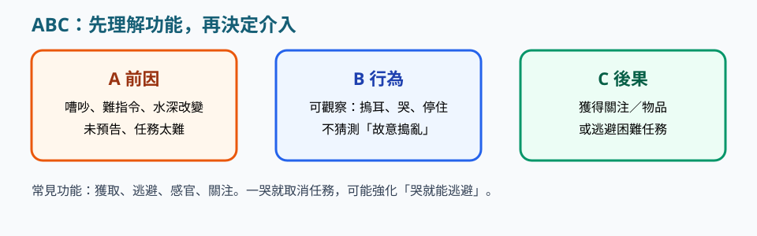

教學支援 · 2.9
請依序研讀導讀、重點與池邊準則，聽粵語說明，再以練習核對理解。
本網站根據課程講義、課堂分享與溝通工具筆記整理，供未能出席面授的學員系統研讀。不能代替醫療診斷、法律意見、課堂實習或面授扶抱示範。涉及健康、用藥、脊柱或癲癇等情況，須按家長／醫護文件執行。
行為是學習的結果，也傳遞需要。以 ABC 記錄前因、可觀察行為與後果。優先調整環境、教導替代溝通，並給予即時具體讚賞，而非僅處罰或永久取消技能。
研讀次序：重點 → 粵語說明 → 本單元練習 → 下一單元「泳池提示咭與先－後卡」。
講義出處：2.9 正向行為管理及小組教學 · 行為是學來的
課堂情境
一哭便准許逃避吹氣，該行為下次更易被維持。
教學原則
後果會維持行為；同時要看馬斯洛需求：安全、歸屬、自尊。
池邊執行
吹氣可降低難度，但不宜讓「哭」成為唯一成功策略；先滿足安全同被理解。
講義出處：2.9 正向行為管理及小組教學 · ABC
課堂情境
你只覺得「他很煩」，卻說不出何時發生。
教學原則
記前因、可觀察行為、後果；記錄時間段（課前、中、後）；區分技能缺失與「不想做」。
池邊執行
用表格寫「哨聲後摀耳→你大聲重複→他更摀」，再決定改哨還是改圖卡。

講義出處：2.9 正向行為管理及小組教學 · 策略
課堂情境
摀耳被當成對抗，你拉開他的手。
教學原則
預告、拆難度、替代溝通、具體讚賞、家校一致；摀耳先減聲；角色扮演讓教師練習引導而非拉拽。
池邊執行
課前同工預演引導路線，家校規則一致，獎勵與期望行為即時連結。
講義出處：2.9 正向行為管理及小組教學 · 小組
課堂情境
能力差距大的學員被編同一組，秩序靠喝罵維持。
教學原則
水試後按能力、年齡、性格分組；教師與助理分工；維持秩序但是正向教育、賞罰分明、亦師亦友。
池邊執行
書面寫明誰看守深水、誰攜帶視覺卡，預演突發才開課。
三題判斷：下列做法是否符合本單元池邊準則。
以下與本頁錄音同一份講稿。建議先讀重點，再聽說明，把判斷次序聽清楚。